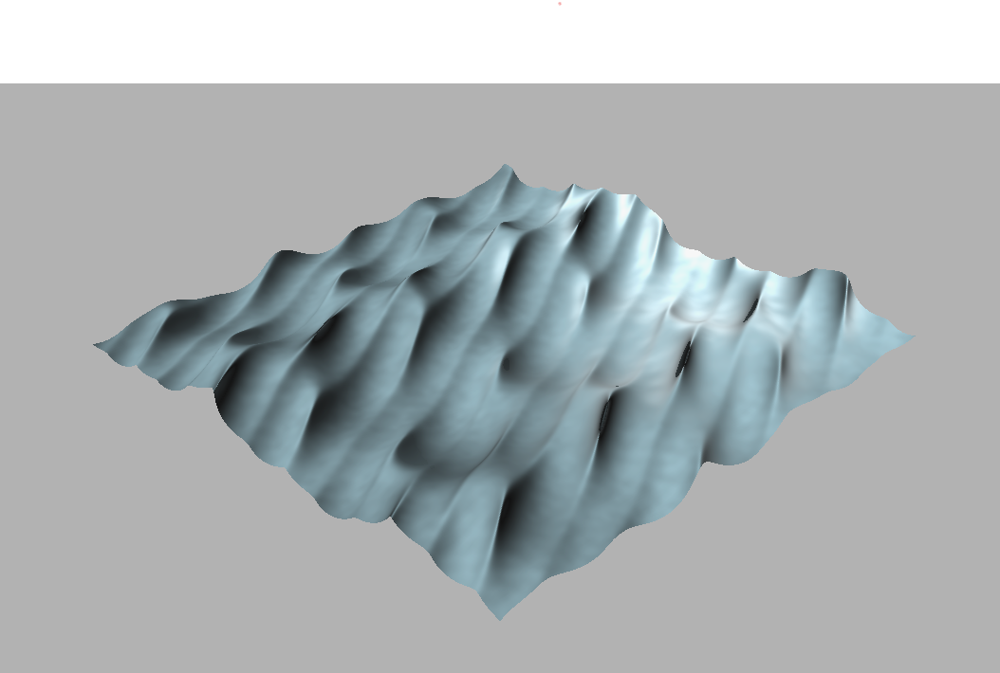

Handheld AR Device
Senior Capstone
Finished on: Ongoing
This project is meant to create an AR device that is more intuitive and more easliy shared. The project uses a Raspberry Pi 4 Model B with a camera to capturea a video feed. The video feed will be parsed using OpenCV to find a QR code. That QR code describes the data that needs to shown at that space. A graphic is then created in unity to match the QR code and projected back out. The graphic is placed in the scene relative to QR code.
GLSL Wave Simulation
Shaders class final
Finished on: March 2021
For the Oregon State shaders course taught by Professor Mike Bailey, the final project is choosen by the students. For my project I chose to use Gerstner waves created in the vertex shader to simulate waves in deep water. The program uses four overlapping waves that can all be adjusted individually to create different patterns in the waves.
Bowling Alley Rest API
Cloud App Development Final
Finished on: December 2020
This is an API I designed to handle customers in a fictional bowling alley and is hosted on GoogleCloud and deployed on Google App Engine. By visiting the url the user will be asked to log in through google and oAuth2.0. If they are succesful their login token will posted onscreen and in the database. The documentation listed under docs gives a complete description of the API. After logging in, a user can interact with the database by sending the requests to the defined endpoints. I used postman to send requests and an environment along with a series of tests are included in the docs folder.